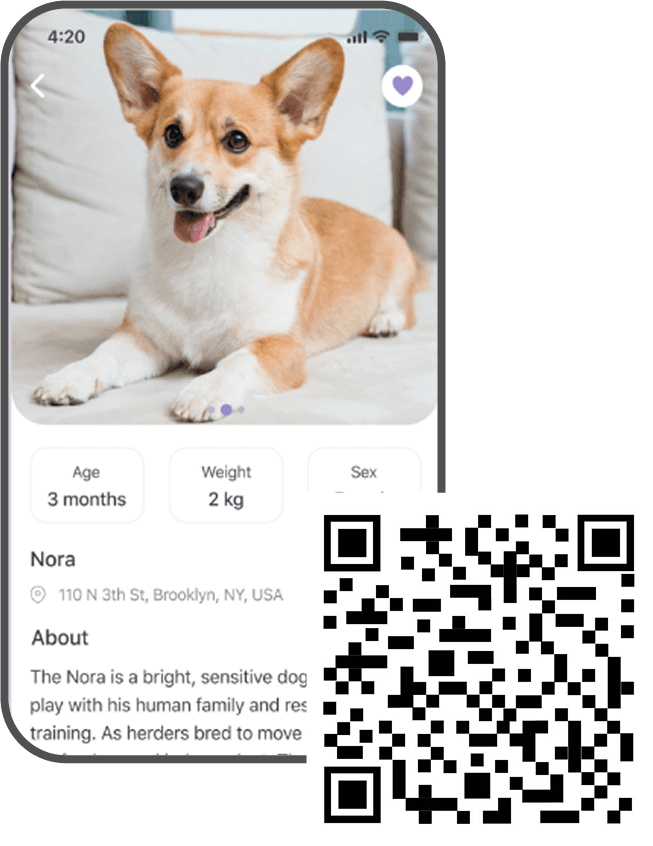

<!DOCTYPE html>
<html lang="en">
  <head>
    <!-- This area is for instructions dor the browser and not the user -->
    <meta charset="utf-8" />
    <title>Default-Template</title>
    <meta name="viewport" content="width=device-width, initial-scale=1" />
    <script
      src="https://kit.fontawesome.com/580b1ba76a.js"
      crossorigin="anonymous"
    ></script>
    <link rel="stylesheet" href="css/main.css" />
    <link rel="preconnect" href="https://fonts.googleapis.com" />
    <link rel="preconnect" href="https://fonts.gstatic.com" crossorigin />
    <link
      href="https://fonts.googleapis.com/css2?family=Bagel+Fat+One&family=Bebas+Neue&family=Chivo:ital,wght@0,100..900;1,100..900&family=Poppins:ital,wght@0,100;0,200;0,300;0,400;0,500;0,600;0,700;0,800;0,900;1,100;1,200;1,300;1,400;1,500;1,600;1,700;1,800;1,900&display=swap"
      rel="stylesheet"
    />
  </head>
</html>

<body>
  <header></header>

  <section class="middle-align-section">
    <div>
      <h2>Rooted in Rescue, Driven by Love</h2>
    </div>
    <div>
      
    </div>
  </section>

  <section class="middle-align-section">
    <div class="middle-align-text">
      <h1>About Us</h1>
      <p>
        Our shelter began with a single rescue—a stray dog found wandering
        alone, hungry and afraid. Moved by the moment, we opened our doors and
        hearts to help. What started as one act of compassion quickly became
        something bigger. With the help of friends, volunteers, and a shared
        love for animals, we began taking in more strays, offering them safety,
        care, and hope. That first rescue sparked the beginning of our
        journey—and it continues to guide everything we do today.
      </p>
    </div>
  </section>

  <section class="two-column">
    <div>
      
    </div>
    <div class="side-text">
      <h2>Our Journey: From One Rescue to a Lifesaving Mission</h2>
      <p>
        Our story began in 2018, when we rescued our first stray—a scared,
        injured dog left in the rain. With no shelter, we cared for him at home.
        Soon, one rescue became many. By 2019, a small group of volunteers
        joined in, offering space, food, and love from their own homes. In 2020,
        we rented our first dedicated space. It was simple but full of hope.
        That same year, we held our first adoption event and found homes for 12
        animals. By 2021, we expanded through social media, reaching more strays
        and adopters across the city. In 2022, we became a registered nonprofit.
        With stronger support, we partnered with local vets and pet stores.
        Since then, we've rehomed over [insert number] animals—and we're still
        growing, one paw at a time.
      </p>
    </div>
  </section>

  <section class="two-column">
    <div class="small-two-column">
      <div class="small-middle-align">
        
        <h3>Jamie Wang</h3>
      </div>

      <div class="small-middle-align">
        
        <h3>Joy Nguyen</h3>
      </div>
    </div>

    <div class="side-text">
      <h2>Meet Our Team</h2>
      <p>
        Jamie and Joy met in university, united by their love for animals and
        volunteering. Jamie studied environmental science; Joy studied
        communications, but they shared a dream to make a difference. After
        rescuing a stray dog, they teamed up to create the shelter. Jamie
        focuses on care, while Joy handles outreach. Together, they lead with
        the same passion that started their journey.
      </p>
    </div>
  </section>

  <section class="middle-align-section">
    <div class="middle-align-text">
      <h2>Shelter Partners / Sponsors</h2>
    </div>
    <div class="four-column">
      
      
      
      
    </div>
  </section>

  <section class="two-column">
    <div>
      
    </div>
    <div class="side-text">
      <h2>Stay Connected On the Go</h2>
      <p>
        Get the latest updates, view adoptable animals, and support our
        mission—all from your phone. Scan the QR code below to download our app
        and be part of our community anytime, anywhere.
      </p>
      <a class="red-button" href="#">Download Our App</a>
    </div>
  </section>
</body>
